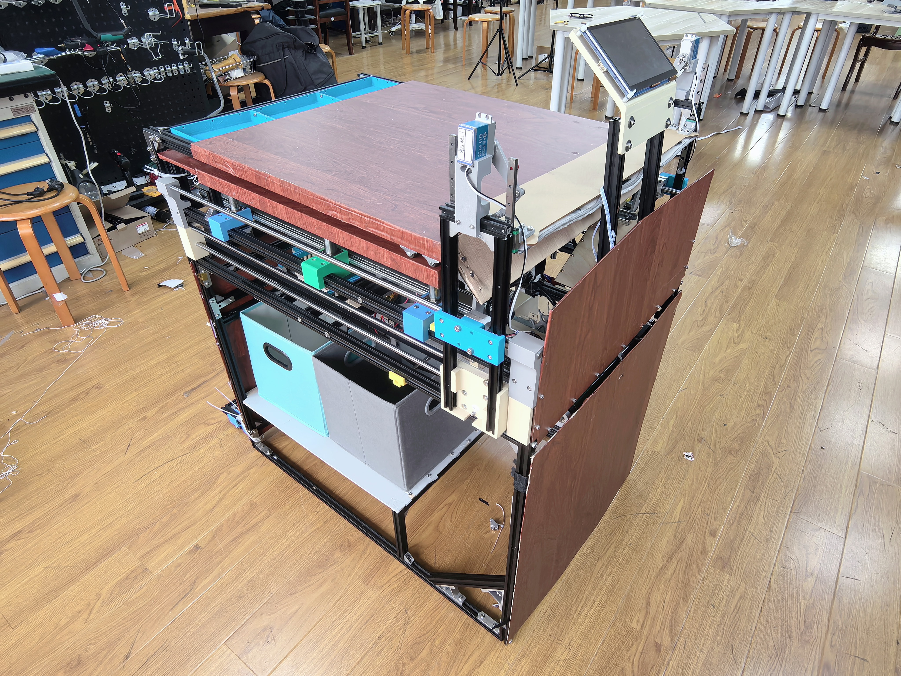

Edge vision AI · offline autonomy
让桌面从
凌乱回到有序。
一张能感知物品、理解场景并完成整理的智能桌。端侧视觉 AI 在桌下完成识别，机械结构把判断变成真实动作。

端侧视觉推理100% 本地图像不出设备，断网也能运行
Why this matters
把 AI 放进真实生活
AI 不停留在屏幕里的回答，而是完成从感知、判断到执行的完整闭环。
4 类物品视觉识别
95%+复杂工况 Top-1 准确率
4 路柔性推板分类入仓
0 云端全链路离线运行
Interactive prototype
AI 整理演示
选择一个真实使用场景，观察端侧模型如何把桌面状态转化为动作决策。
选择使用场景
场景会改变桌面的空间策略与整理建议。
学习模式 · 识别与整理
设备在线 · K230 就绪
视觉感知等待扫描桌下识别区--
时序投票等待连续帧--
决策下发等待类别确认UART
机械执行四路推板待机SAFE
本次预计收纳
READY0 件物品
System architecture
四层协同，AI 负责判断
每一层只做自己擅长的事，通过 UART 连接成稳定、可维护的端侧系统。
01 / SENSING
感知层
桌下摄像头、全局快门与 COB 补光，在受控区域采集物品图像。
02 / DECISION
决策层
K230 运行 YOLOv12n，INT8 量化后完成类别识别与动态时序投票。
03 / ACTION
执行层
MCU 驱动传送带和四路齿轮齿条推板，PD/S 型曲线实现柔性入仓。
04 / INTERACTION
交互层
离线语音和串口屏提供低门槛入口，状态与异常即时反馈。
The real prototype
作品资料
从实体结构到端侧模型，网页演示对应真实样机的设计。
视觉下沉桌面不部署光学传感器，识别集中在桌下传送带区域。
本地闭环图像采集、模型推理和分拣决策在 K230 本地完成。
柔性分拣针对轻小物品优化推板速度与启停，降低弹飞和损伤。
四类收纳个人用品、电子数码、文具用品、家居日用分别入仓。